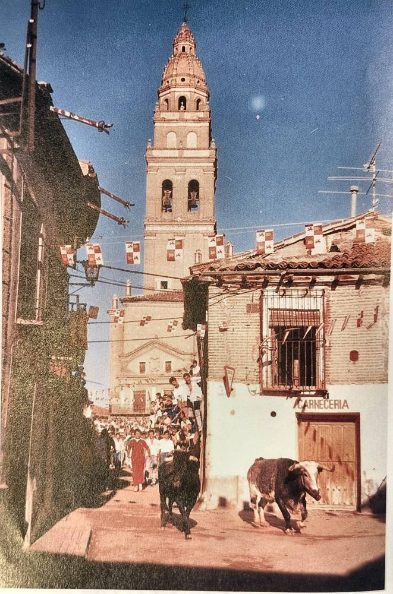

Toros en Alaejos
Cuatro siglos de festejos taurinos documentados, de las cuentas del concejo de 1583 al encierro a caballo y el Toro del Caño de hoy.
De las cofradías al concejo: 1583-1688
La afición taurina de Alaejos no es una costumbre reciente. La primera noticia es de 1583: un gasto de toros anotado en las cuentas del concejo, junto a otro de reparación de calles. En 1619 la villa celebró la llegada del conde de Ayala con cuatro toros que costaron 40.000 maravedís. En 1625, para San Juan, se compraron dos toros a un ganadero de San Román de la Hornija, y se probó cada uno con una vara antes de comprarlo. En 1681 la cofradía de San Roque pidió la plaza para correr sus toros y el concejo añadió uno más pagado de sus fondos (Ojeda Nieto, programa de 1995). Un documento de 1688 describe cinco toros corridos por la plaza pública un 17 de junio (Castaño Casquero, programa de 1984). Es decir, en el Antiguo Régimen los toros los pagaban sobre todo las cofradías, y no estaban ligados a la Virgen de la Casita sino a San Juan, San Roque o el Corpus.
La plaza y las ganaderías
A comienzos del siglo XX los toros ya eran el centro de las fiestas de septiembre. En 1910 se subastaron dieciséis novillos utreros para los días 8 y 9 por 1.299 pesetas. El Ayuntamiento contrató a cuatro matadores para las novilladas en la Plaza Mayor, y el público participaba solo en los encierros (Castaño Casquero, programa de 1984). Las campanas tenían incluso un toque a toro escapado (Rubio Martínez y otros, programa de 2025). Alaejos nunca tuvo ganadería brava en su término, pero fue «tierra de paso de manadas de toros» por la cañada real. Las reses venían de ganaderías del entorno, como El Raso de Portillo, de donde salieron los primeros toros corridos en Alaejos, Aguachal, Molero Hermanos, Tarango (Fuentesaúco), Chulas (Torrecilla de la Orden) y Mayoral (Castronuño). Las de Chulas se traían a caballo hasta un corral del pueblo y de allí a la plaza (Jaime Caballero, programa de 1990). Es probable que el actual encierro a caballo desde el paraje de Sancierna herede aquella conducción de toros desde el campo.

.jpg){kind=link}
Los festejos de hoy
El programa de 2026 reúne casi todas las formas del festejo popular castellano: chiqui-encierros para los niños, el Toro del Caño (XV edición), el concurso de cortes «Villa de Alaejos» (XXVIII edición), un encierro de ida y vuelta, encierros urbanos con novillos y bueyes, con toro de prueba en la plaza, un festejo taurino el día de la patrona (en 2026, con Curro Díaz, Uceda Leal, Álvaro de la Calle y el novillero Moisés Fraile), un Gran Prix, el encierro a caballo, vaquillas y, ya en agosto, una capea en una finca privada (Programa de fiestas de 2026). Si las ediciones se han celebrado todos los años, lo que no hemos comprobado, el concurso de cortes empezaría hacia 1999 y el Toro del Caño hacia 2012. Los toros ocupan también buena parte de la Biblioteca: siete de los trece artículos del tema festivo hablan de ellos, aunque la mayoría son defensas generales de la tauromaquia más que historia local (véase la Biblioteca, por temas).
En 1991 la afición se describía así: novilladas, encierros por las calles y por el campo, a caballo, y verbenas con suelta de vacas. Todo en la Plaza Mayor, «ahora más bella aún» con las talanqueras de palos verticales, que permitían participar a todo el que quisiera y se atreviera. Las vaquillas de la Fiesta de los Emigrantes, en agosto, se corrían en una dehesa de la que solían traerse los novillos de septiembre (Rodríguez Carracedo, Alaejos, apuntes histórico-artísticos, 1991, pág. 44).


Para seguir leyendo
- José Ojeda Nieto, «Las antiguas fiestas de Alaejos» (1995).
- Adelio Castaño Casquero, «Las fiestas en Alaejos, a principio de siglo» (1984).
- Jaime Caballero, «Toros en Alaejos» (1990).
- Mariano Rubio Martínez, Agustín Rapado Rodríguez y Carlos Rubio Corrales, «Campanas de Alaejos y sus toques» (2025).
- Sobre la fiesta en general: «Algunos datos de la fiesta nacional que debe conocer todo buen aficionado» (sin firma, 1989), sobre la edad y las capas de los toros; Antonio Lucas Varela, «Monografía sobre los toros (I)» (2010), sobre la historia del toro desde el uro, y José Sánchez Poncela, «Monografía sobre los toros (II)» (2011).
- Artículos de opinión en defensa de la fiesta, de José Sánchez Poncela: «Reflexión sobre la fiesta taurina» (2010), «De la tauromaquia, prohibiciones y otros argumentos» (2023) y «Sí a la tauromaquia, no a la taurofobia» (2026). Los programas no han publicado opiniones contrarias; el debate general sobre la tauromaquia excede esta web.
- La vieja plaza de palos y tablas, en verso: Alfredo Otero Villoria, «3 plazas 3» (2025).
- Programa de fiestas de 2026.
- Francisco José Rodríguez Carracedo, «Folklore», en José Ojeda Nieto, Alaejos, apuntes histórico-artísticos (Valladolid, Diputación, 1991), págs. 41-46. Se cita con autorización de los autores.
Cómo citar esta página
Amigos de Alaejos, «Toros en Alaejos», https://www.amigosdealaejos.org/fiestas-y-eventos/toros-en-alaejos/ (revisión del 18/11/2026).